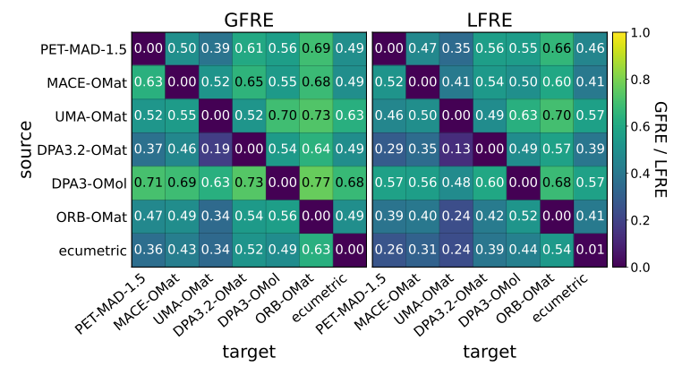
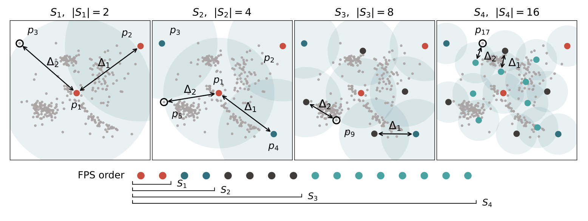
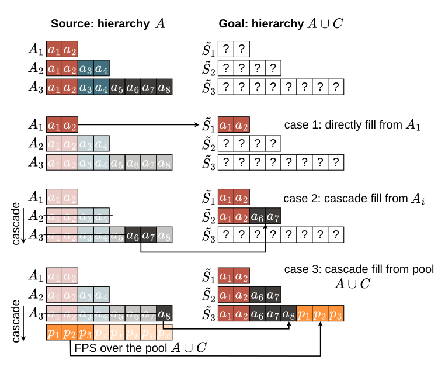
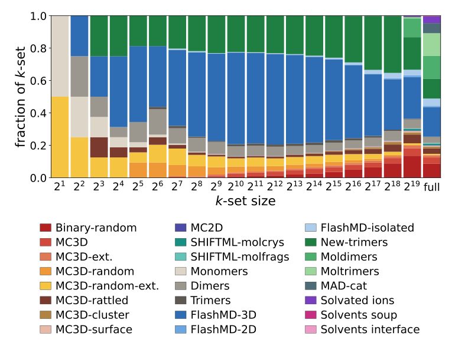
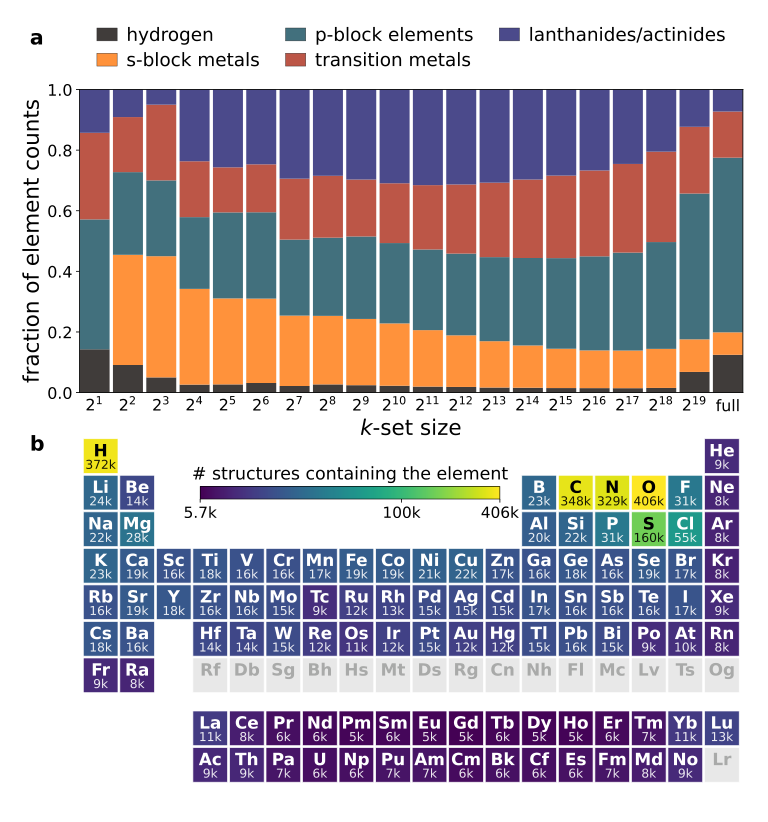
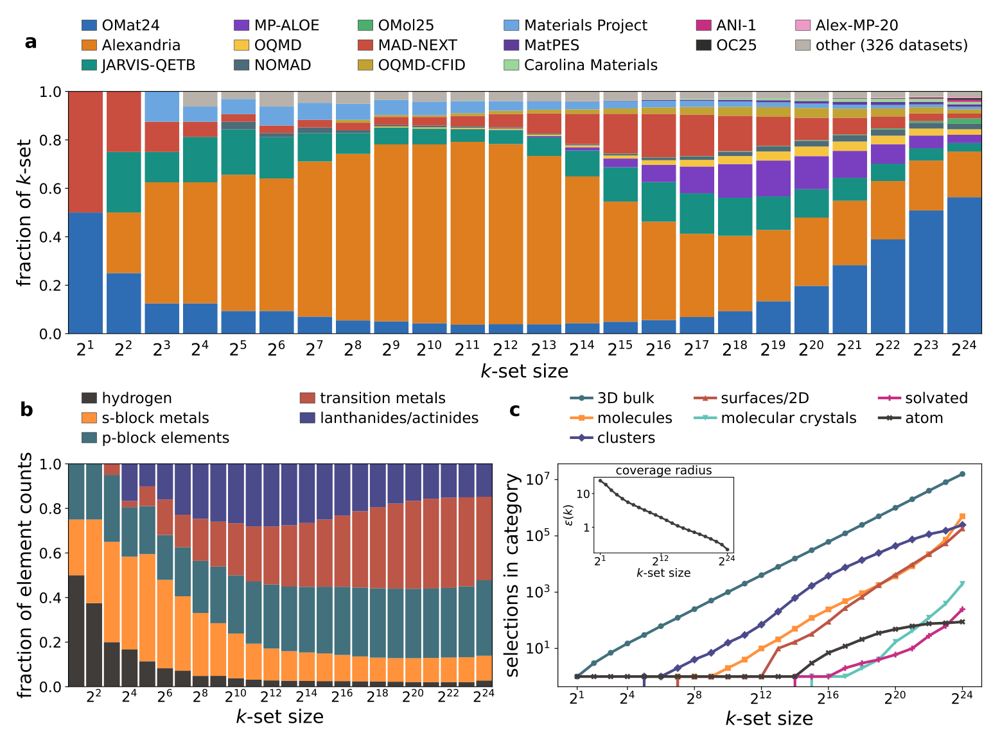
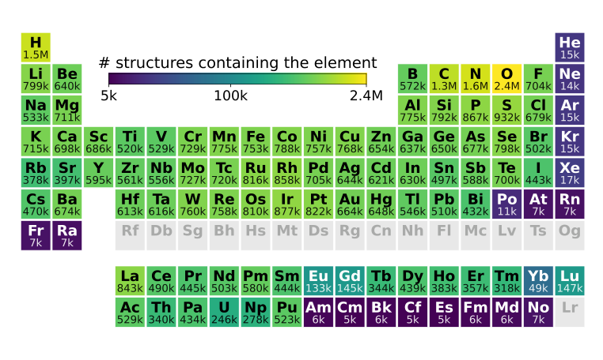
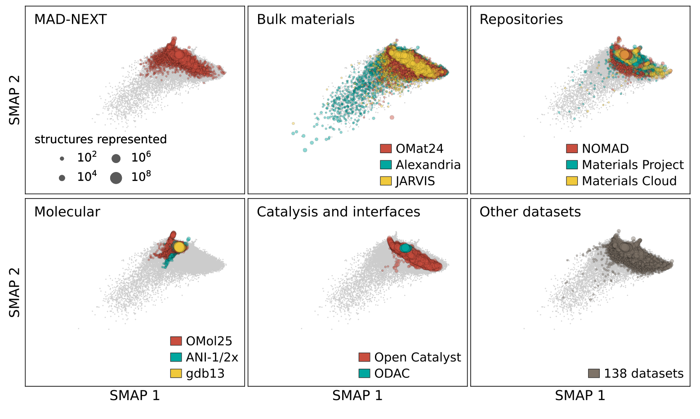
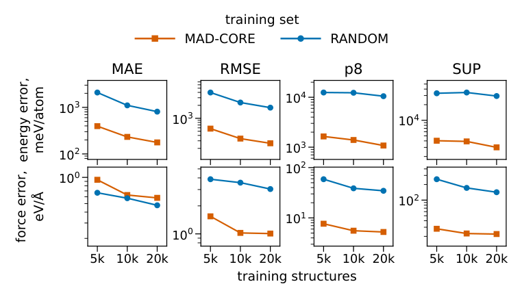
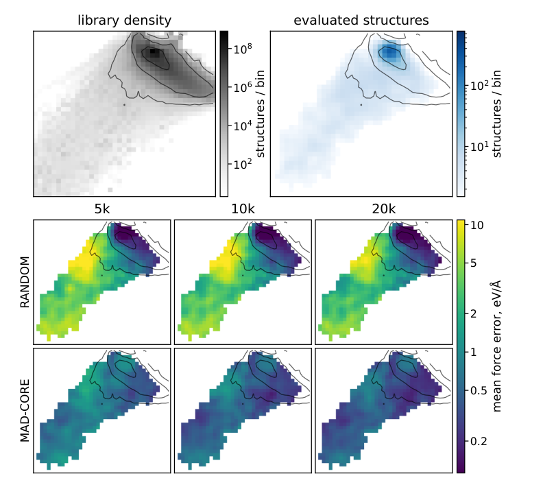

MAD-COSMO与MAD-CORE：把17亿个原子结构整理成可按预算扩展的训练候选库
论文原文 ↗原文：Sofiia Chorna、Cesare Malosso、Jonathan Schmidt、Michele Ceriotti，Hierarchical universal open structure dataset for atomistic modeling，arXiv:2610.21771，2026。〔官方页面｜〕
训练通用机器学习原子间势时，公开数据越来越多，却不等于可用信息按同样速度增加。同一个分子或晶体可能被多个项目重复计算，一条短动力学轨迹也会贡献许多相似构型。不同数据源的泛函、基组和收敛设置又不一致，直接拼接很容易同时遇到结构重复与标签不统一的问题。
作者提出的办法，是先把“有哪些不同结构”整理清楚：汇集约17亿个结构组成 MAD-COSMO，再用统一的结构距离将它们组织成逐级加密、彼此嵌套的代表性子集 MAD-CORE。研究者可以从同一序列中按预算取出几千、几万或更多结构，重新计算一致的参考标签，而不必每次从头决定选哪些样本。
一、方法怎样做：先定义距离，再按覆盖程度排列结构
结构相似性来自多个通用势的共同表示
输入首先是一个原子结构的元素、坐标与晶胞。作者需要把它变成一个数值向量，使相近的化学和结构环境在向量空间中靠近，才能衡量某个新样本是否补充了已有覆盖。
单独采用某一个通用势的内部表示，会继承该模型训练范围所形成的相似性判断。作者因此训练一个 SPACE 图神经网络，同时学习两类目标：MAD-NEXT 数据的 r2SCAN 能量与力，以及五个通用势最后一层的原子特征。后者包括 PET、MACE、UMA 和 DPA 的不同模型，涉及无机材料、分子及不同电子结构近似。
这一训练把多种模型的结构认识汇集到一个网络中。使用时，每个新结构只需通过 SPACE 一次，取得每原子256维的不变特征；再将所有原子的均值和标准差拼起来，得到512维结构向量。均值反映总体环境，标准差补充一个结构内部环境是否多样。作者把这个共同表示空间中的欧氏距离称为 ecumetric，即综合多种模型信息的结构度量。

图3｜各行作为信息来源，重构各列的模型特征；颜色越暗、误差越低，表示能更好地恢复另一种表示。
作者用全局和局部特征重构误差评估这一共同表示。在测试结构上，ecumetric 对多数其他模型特征的重构优于模型间直接互相重构；还比较了没有作为教师目标的 ORB 表示。这让后续选样使用的是一个可快速计算、综合多种模型信息的距离。
最远点采样，把固定预算变成由粗到细的覆盖
有了距离，下一步是最远点采样（FPS）：先选一个结构，再不断寻找“离目前所有已选结构仍最远”的构型。若某一区域已经有许多相似样本，再加一个通常贡献较小；尚未被覆盖的区域会更早进入序列。
作者按序列前缀取出1、2、4、8……个样本，形成大小为2的幂的层级。后一层保留前一层，并补充更多结构，所以小预算试验做过的参考计算可以继续用于更大的集合。

图1｜彩色点随层级加入，阴影表示覆盖范围；下面同一条采样序列的不同前缀，构成彼此嵌套的子集。
这里的覆盖半径，是所有候选到最近已选结构的距离中的最大值。它回答“当前代表集最疏漏的区域离代表点还有多远”。已选结构彼此的最小间距，则衡量代表点是否仍足够分散。FPS 在所用距离下将两者联系起来；子集增大时，覆盖逐步加密。
新数据加入时，尽量沿用已经选好的代表结构
如果每加入一个公开数据集就重跑整条序列，原来准备重算或已经重算的代表集可能不断变化。作者设计了 accretion（增补）算法：先以 MAD-NEXT 的结构序列为起点，再把外部候选合并进来。
每一层先尝试保留原层级成员，必要时从原来更深的层级补充，再用整个候选池的 FPS 填满剩余名额；通过搜索决定在维持该层覆盖条件的同时能保留多少旧成员。这样，新集合可以扩展覆盖，而较粗层级仍尽可能复用原来做过的选择。

图2｜优先保留原层级成员，再从更深层级和整个候选池补充，形成扩大后的嵌套集合。
最终还要把未入选结构与代表集接起来：每个结构归到距离最近的代表点，形成一组 Voronoi 单元。这里的单元是特征空间中的“归属区域”。它既记录一个代表点周围有多少原始样本，也便于围绕目标体系检索相近结构。若希望兼顾多样性与原始数据的密集区域，还可按单元大小加权抽样。
二、怎样把公开结构整合到这个层级里
以广覆盖的MAD-NEXT为起点，再吸收外部数据
作者先汇集1000多个公开数据记录，按来源家族组织结构。MAD-COSMO 保留元素、坐标、晶胞和来源信息；原数据的量子性质可通过来源标识回到原始记录取得。用于训练比较的标签，则另外在选定结构上用一致设置重算。
初始 MAD-NEXT 包含约85.6万个结构，覆盖102种元素，包括晶体、分子、表面、团簇以及溶剂相关构型。作者从孤立氢原子开始做 FPS，得到第一条层级序列。

图4｜不同颜色表示 MAD-NEXT 的结构来源；粗层级优先加入单原子、小团簇和差异较大的晶体构型。

图5｜上图显示元素家族比例随预算变化，下图显示完整 MAD-NEXT 中包含各元素的结构数量。
在 MAD-NEXT 中，前480个选择已覆盖全部102种元素。随后，大型数据源各自先进行 FPS 子选，避免单一大数据集占满计算；合并后形成约1.83亿结构的候选池，再用增补算法扩展初始层级。最终的 MAD-CORE 含 2²⁴=16,777,216个结构。
记录数最多的来源，未必带来最多不同结构

图6｜a 比较各数据家族的贡献；b 显示元素类别；c 显示不同结构类型的累积数量，插图是覆盖半径随预算的变化。
最终约94%的代表结构是三维体相材料，OMat24 与 Alexandria 合计贡献约四分之三。分子数据在原始全集中占据很大比例，最终代表集中却只占约3.5%；催化相关数据约占1%。这些差异反映的是所用共同结构距离下，各来源增加了多少新的覆盖。

图7｜颜色和数字表示 MAD-CORE 中包含各元素的结构数量，展示宽元素覆盖与各元素的不同采样密度。
在扩大后的集合中，前2158个选择已覆盖全部102种元素。以最细代表集的覆盖半径衡量，通过几何筛查的完整原始库有 99.17% 落在该半径内，99.93%落在前一层的覆盖半径内。虽然排序是在子选候选池上完成的，所得代表点仍覆盖了几乎整个原始库。

图8｜同一低维投影分别标出材料、分子、催化及其他来源；点的大小表示其代表的原始样本数量。
作者进一步将高维结构距离投影到低维图上，观察各数据家族覆盖哪里。GDB-13 的近十亿个分子构型集中在较小区域，无机材料延伸到更广的区域；一些规模很小的专门数据记录也能贡献新区域。这样，数据库既成为选样工具，也能帮助识别已有采样密集处和待补充区域。
三、实际训练结果：覆盖型选样改变了模型在哪里容易出错
1. 相同结构预算下，罕见区域的误差更小、更均匀
作者分别取 MAD-CORE 前缀与 MAD-COSMO 随机样本，构建5000、10000和20000结构的训练集，用统一 PBE 设置重算，再从头训练 PET 势。共同测试集由2000个随机结构和2000个留出的代表集结构组成，兼顾常见区域与较稀疏区域。

图9｜各列依次为平均绝对误差、均方根误差、强调大误差的八阶均值和最大误差；橙色为 MAD-CORE 选样。
MAD-CORE 在强调大误差的指标上优势更明显，部分指标改善可达约一个数量级。平均力误差方面随机选样仍有竞争力：相同结构数下，随机结构通常更大，包含的原子和力标签约为代表集选样的六倍。

图10｜上排展示原始库和测试集的密度，下方比较不同训练预算下的局部平均力误差；黄色区域误差较大。
图10说明差别发生在哪里：随机训练在原始样本密集区误差较低，到了外围稀疏区域则明显增大；MAD-CORE 训练的误差在整个空间里更均匀。因而，它尤其适合优先补齐广覆盖所需结构，再通过按单元密度加权来调整常见区域的精度。
2. 同一小型代表集，可以支持不同理论层级之间的修正
作者还在约18000个代表结构上计算 LDA、PBE 和 r2SCAN 标签，比较直接学习 r2SCAN 与学习泛函差值。差值学习就是先有一个基础计算，再只预测另一层级相对它增加或减少的能量与力。
在 MAD-CORE 留出测试中，直接微调 r2SCAN 的能量、力平均绝对误差约为143 meV/atom、382 meV/Å；采用 LDA加学习修正 后，分别为29 meV/atom、62 meV/Å。使用 PBE 基础加修正也得到较小误差。作者还把差值模型与已有 r2SCAN 势组合，用于水的动力学，得到相应 LDA 或 PBE 结构分布的变化。
这使“分层选结构 → 用一致理论重算 → 学习或迁移势”成为一条可以实际执行的路线。
四、领域贡献：把结构库变成可持续扩展的计算计划
MAD-COSMO 提供已有结构的大范围汇集，MAD-CORE 则提供一条随预算扩大的代表序列。共同结构距离、嵌套前缀、增补算法和最近代表点归属，将数据整合、选样、局部检索与后续更新连接起来。
对通用势研究，这项工作最值得关注的是如何协调参考计算：先看新结构填补了哪个区域，再决定投入哪一层级的量子化学标签；已有小预算结果也能进入更大规模的数据集。论文的训练和差值学习比较展示了这种组织方式的实际用途，并为今后集中生成更高精度参考数据提供了共同结构基础。
原始摘要完整中文翻译
能够以量子计算的精度、却只需其一小部分成本预测原子结构性质的机器学习模型，已经改变了原子尺度模拟。随着合成数据集规模和范围不断扩大，这些模型的通用性显著提高。然而，数据集的不断涌现也带来问题：性质经常采用不同层级的电子结构近似计算，不同数据集之间往往存在重叠，而短分子动力学轨迹或几何优化得到的结构之间又具有很强的相关性。为解决这些问题，我们提出一种协议，将数据集分层组织成彼此嵌套的子集，并依据一种旨在反映多个流行通用机器学习原子间势潜在空间表示的“ecumetric”，从最粗到最细分辨率进行子采样。随后，我们用这一方法整合目前大多数开放结构数据集，将它们汇集为 MAD-COSMO，一个组织有序、包含近17亿个结构的集合。其中最多样的2²⁴个成员构成分层核心子集 MAD-CORE，可方便地用于从探索性试验到大规模基础模型训练的各类任务。我们设想，这一集合将指导并帮助协调未来工作，使其聚焦于化学与结构空间中最相关及／或采样不足的区域，并通过纳入整个研究共同体的工作成果继续扩展。